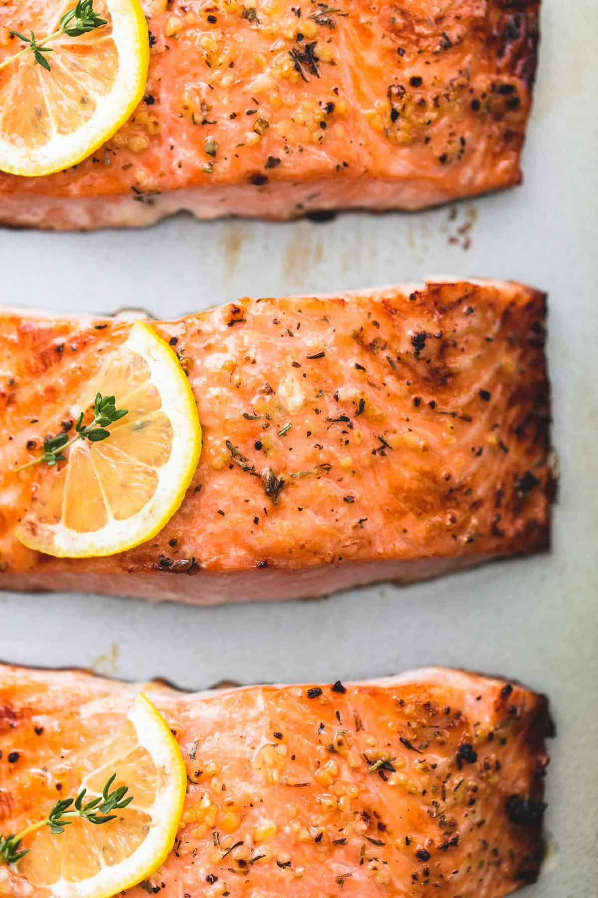

Oven Baked Salmon★
 4
servings
4
servings 25
minutes
25
minutes Source
Source Meat
Meat
Easy Healthy Baked Salmon.

Heat the oven to 425 F degrees.
4salmon fillets - about 6 ounces each2 tbspolive oil- salt and pepper
2 tspminced garlic1 tspitalian seasoning blend1medium lemon- chili lime (optional)
- butter (optional)
Arrange salmon fillets on a baking sheet and season generously with salt, pepper, and chili lime.
Stir together olive oil, garlic, herbs, and juice of ½ lemon. Spoon over salmon fillets being sure to rub all over the tops and sides of the salmon so it has no dry spots. Thinly slice remaining ½ of lemon and top each piece of salmon with a slice of lemon and a piece of butter on top.
Bake for 12 minutes until salmon is opaque and flaky when pulled apart with a fork.